1) Crear cuenta (email)
- Abre la pestaña Crear Cuenta.
- Completa nombre, email y contraseña.
- Pulsa Crear Cuenta.
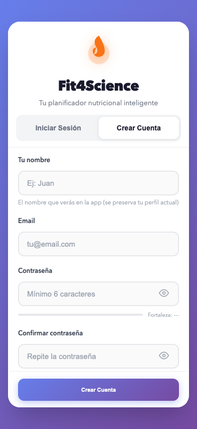
Documentación visual para usar la app desde cero: registro, objetivos, registro de comidas, escáner, IA y seguimiento diario. Auditoría real de UI y flujos detectados en la app.
Cómo entrar a Fit4Science y resolver el flujo de acceso inicial.

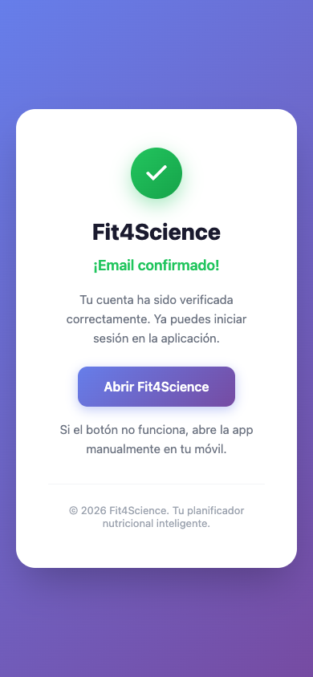
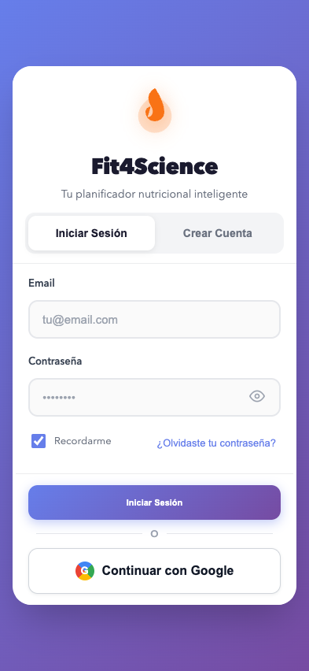
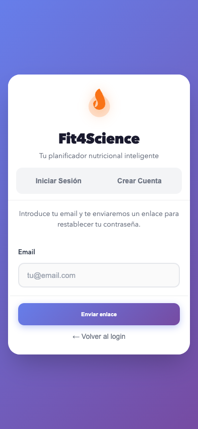
Si el enlace caduca o es inválido, aparece una pantalla de aviso.
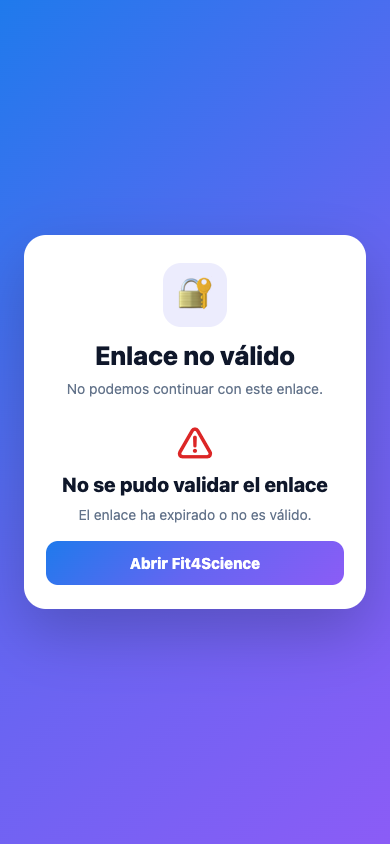
Qué revisar al entrar por primera vez para dejar la app lista.
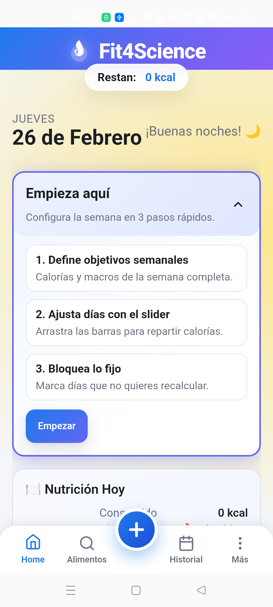
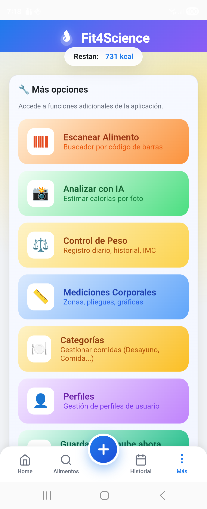
Modal de alta de comida y métodos de registro disponibles.
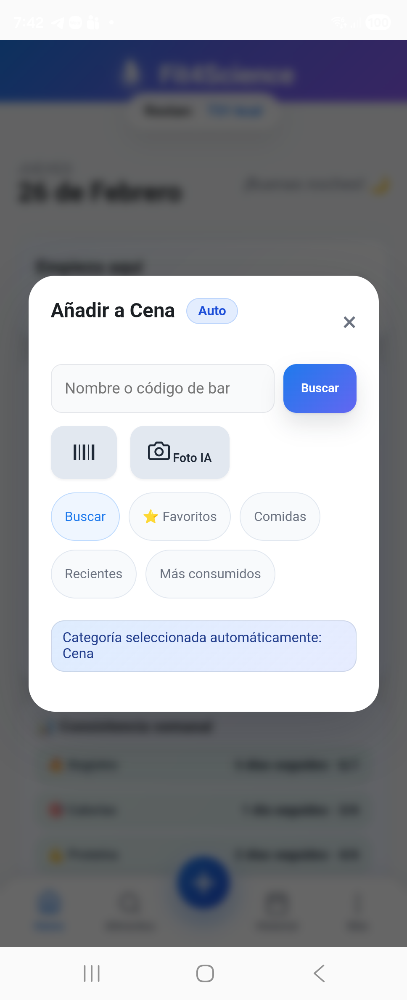
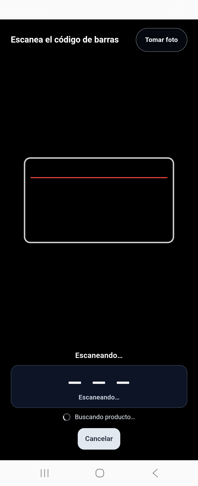
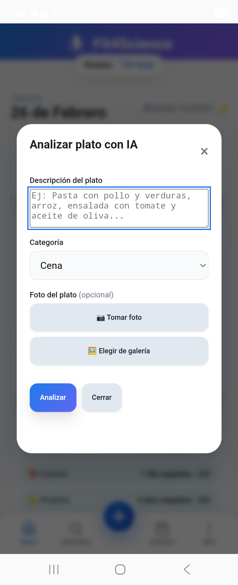
Dónde ver consumo, objetivo, macros y consistencia.
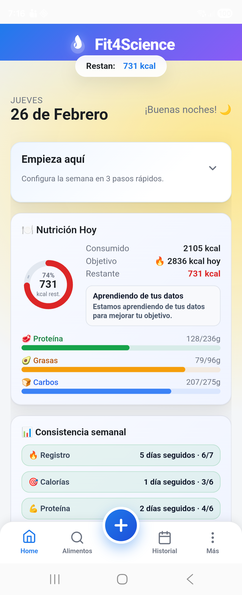
La app incluye pestaña de historial y acciones de ajuste semanal. En esta auditoría no se completó un recorrido con captura final de ambos flujos.
Opciones extra para personalizar uso y seguimiento.
Desde Más → Categorías puedes ajustar franjas horarias para mejorar la auto-selección de comidas.
Accesos disponibles desde Más para perfiles de usuario, perímetros, pliegues e histórico de evolución.
Se detecta soporte de sincronización y recuperación de perfiles en la nube. Recomendado validar con cuenta real antes de publicación de esta guía como “cerrada”.
Canales integrados para feedback, bugs y seguimiento.
En auditorías previas se observó este flujo en UI; conviene validar permisos/RLS activos en producción para listar datos sin errores 401.
Existe modal de conversación para seguimiento de respuestas sobre ideas/errores. No se completó conversación real durante esta revisión.
Rutina mínima para usar Fit4Science de forma efectiva.
Estado de verificación de los 30 flujos solicitados. “Verificado” = evidencia de UI real. “Parcial” = detectado en UI/código, pendiente de recorrido completo.
| # | Flujo | Estado | Evidencia |
|---|---|---|---|
| 1 | Registro con email | ✅ Verificado | auth-register.png |
| 2 | Confirmación de cuenta | ✅ Verificado | email-confirmed.png |
| 3 | Login con email | ✅ Verificado | auth-login.png |
| 4 | Login con Google | 🟡 Parcial | Botón visible + flujo detectado en código |
| 5 | Reset de contraseña | ✅ Verificado | auth-reset-request.png, reset-link-status.png |
| 6 | Pantalla Home | ✅ Verificado | home-start.png, home-macros.png |
| 7 | Objetivos base diarios | 🟡 Parcial | Panel “Empieza aquí” + navegación detectada |
| 8 | Revisión de objetivos | 🟡 Parcial | UI detectada, sin captura de ciclo completo |
| 9 | Registro manual de alimentos | ✅ Verificado | add-food-modal.png |
| 10 | Buscar alimentos | ✅ Verificado | add-food-modal.png |
| 11 | Favoritos | 🟡 Parcial | Pestaña visible en modal |
| 12 | Recientes | 🟡 Parcial | Pestaña visible en modal |
| 13 | Más consumidos | 🟡 Parcial | Pestaña visible en modal |
| 14 | Crear alimento nuevo | 🟡 Parcial | Flujo detectado en UI/código |
| 15 | Editar alimento | 🟡 Parcial | Flujo detectado en UI/código |
| 16 | Vincular código de barras | 🟡 Parcial | Flujo detectado (barcode manager) |
| 17 | Escáner de código de barras | ✅ Verificado | barcode-scanner.png |
| 18 | Foto IA etiqueta/plato | ✅ Verificado | ai-analysis-modal.png |
| 19 | Registro por categorías | ✅ Verificado | add-food-modal.png (“Añadir a Cena”) |
| 20 | Auto-selección por hora | ✅ Verificado | Hint de categoría automática |
| 21 | Gestión de categorías y horarios | 🟡 Parcial | Acceso detectado en Más/Categorías |
| 22 | Historial diario | 🟡 Parcial | Pestaña detectada, sin captura de flujo completo |
| 23 | Macros del día | ✅ Verificado | home-macros.png |
| 24 | Perfiles | 🟡 Parcial | Acceso detectado en Más |
| 25 | Mediciones corporales | 🟡 Parcial | Acceso detectado en Más |
| 26 | Ajustes de cuenta | 🟡 Parcial | Menú de ajustes detectado |
| 27 | Sugerencias / reportar errores | 🟡 Parcial | Modales y botones detectados |
| 28 | Conversaciones / respuestas | 🟡 Parcial | conversation-modal detectado |
| 29 | Sincronización nube | 🟡 Parcial | Funciones y flujos de sync detectados |
| 30 | Flujo diario recomendado | ✅ Definido | Basado en flujos verificados |
No. Con login + registro de comidas + revisión de macros en Home ya tienes el núcleo funcionando. Escáner e IA son complementarios.
Prueba en este orden: Buscar por nombre, buscar por código de barras, escanear etiqueta, y si hace falta crear alimento manual con macros por 100 g.
Sí. En el apartado de categorías/horarios puedes ajustar selección automática y rangos horarios para cada tipo de comida.
Significa que el flujo existe y se detectó en UI/código, pero no se documentó con recorrido end-to-end completo en esta auditoría. Se recomienda completar esas capturas en la siguiente iteración.